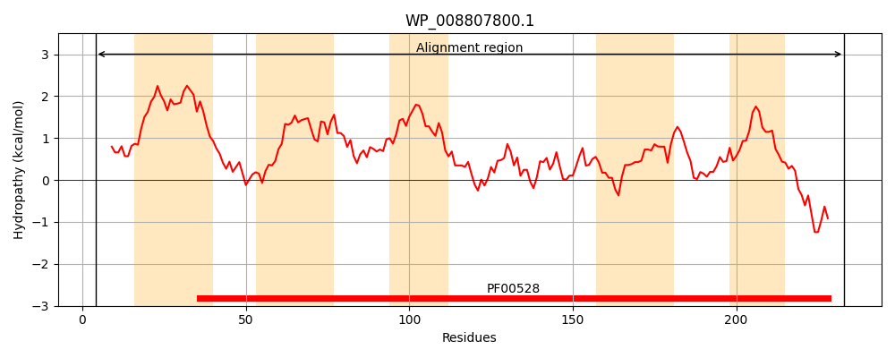
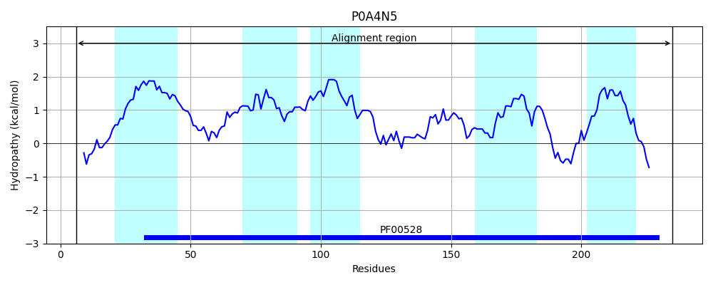
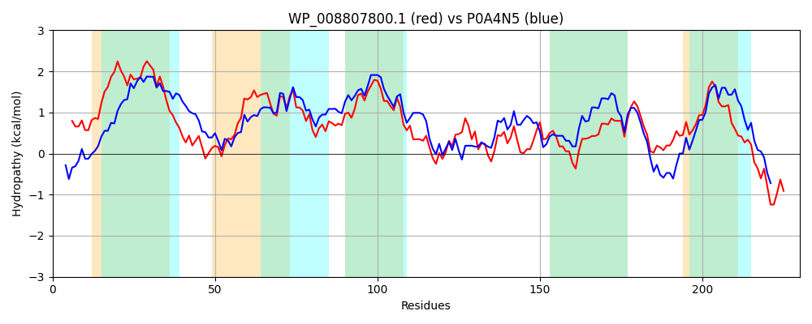

Hit Accession: P0A4N5
Hit TCID: 3.A.1.3.5
Hit Description: gnl|BL_ORD_ID|8586 gnl|TC-DB|P0A4N5|3.A.1.3.5 Octopine transport system permease protein occQ - Agrobacterium tumefaciens.
Mach Len: 230
e:0.000000
Query TMS Count : 5
Hit TMS Count: 5
TMS-Overlap Score: 4.600000
Predicted Substrates:CHEBI:7366;D-octopine
BLAST Alignment:
Score: 537 , Bit scores: 211 bits, E-value: 6.4e-69, Alignment length: 230, Percentage identity: 48
Query: 4 LLSFGENGWGTLILSATLTTLLLSLAALAVGAGVGGVIAAAKLSRHAPARWFGAAWSVVFRGIPELLVIYLFYFGGSGMISWVGRLFGADGFIEVPPFLIGALAIGLISSSYQAEVYRAARLALMPGEVEAATAIGMPRWRILQRILLPQIIRYSLPGLSNVWQMSLKDSALVSVTGIVELMRASQIAAGSTRDYFLFYLIGGGCYLILTLLSNRAFTRAESHLNRAWLR 233
L+ FG +GWG +L AT T+ ++ + +G G + AAA LS + + ++ RGIP+LLVIYLFYFG S +IS V LFG+ GF+ FLIGALAIG++S +YQ +V R A LAL GE+EA A GM + +RI+LPQ RY+LPG+ NVWQ+ LK+SAL+SV G+VELMR +Q+ +GSTR F FYL YL++T +S + F AE+ R R
Sbjct: 6 LMGFGPDGWGYDMLRATAMTMAVAFSGFTIGLVFGCLGAAASLSSSGALQAAASGYTTALRGIPDLLVIYLFYFGSSSVISNVASLFGSSGFVGASTFLIGALAIGVVSGAYQTQVLRGAVLALNKGEIEAGRAYGMGALLLFRRIVLPQAARYALPGVGNVWQLVLKESALISVIGLVELMRQAQVGSGSTRQPFSFYLTAAALYLLITFVSGQVFRLAETRSMRGLQR 235 | Protein Hydropathy Plots: |
|---|
|  |  |
Pairwise Alignment-Hydropathy Plot:
|
|---|
|  |